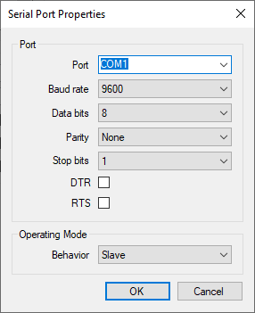
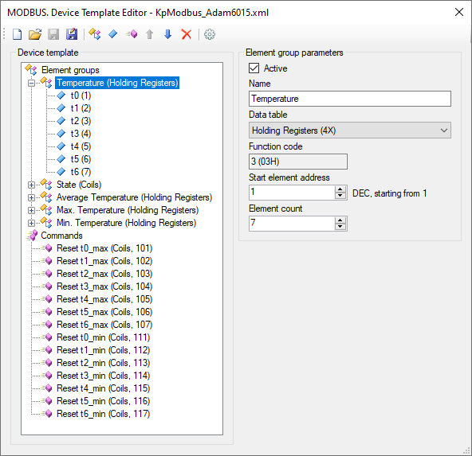

Modbus Slave Driver
Overview
The driver supports the standard Modbus communication protocol and works as a slave. Using the driver, the Communicator waits for incoming requests and commands from a third-party device or application that works as a master. The following communication channels are supported: serial port, TCP server, and UDP. The driver can work in Modbus RTU or Modbus TCP mode.
Modbus Slave Driver features:
- Receives data from a device using write commands.
- Provides data to a device in response to read commands.
- Transmits values of Rapid SCADA input channels received from other devices in order to integrate with third-party systems.
Installation
Modbus Slave Driver is installed in accordance with the general sequence of installing Communicator drivers. The driver library file is KpModbusSlave.dll.
Configuring
First of all, create a new communication line and a new device in the configuration database, as well as in the Communicator settings. For this purpose, it is suggested to use wizards that are opened by the  and
and  buttons. The device address matters, because this is the unit ID that the Communicator validates to respond. Then open the main parameters of the communication line, select the communication channel type and configure its properties. Examples of communication channel properties are shown below.
buttons. The device address matters, because this is the unit ID that the Communicator validates to respond. Then open the main parameters of the communication line, select the communication channel type and configure its properties. Examples of communication channel properties are shown below.


After creating a device in Communicator, open the the device properties form and configure the device.

Input data validity period allows to automatically set the undefined status of the device input tags, if no new data has been received from the device within a specified time.
Device template defines the Modbus register map. Device templates of the KpModbus.dll and KpModbusSlave.dll drivers are fully compatible.
Data source device is set to non-zero to transmit the input channels values received from another device into a third-party system. If the driver is used to interact with a real device, this parameter should be 0.
The following figure shows the Modbus template editor:

Modbus Slave Driver requires registration. After completing the settings, upload the project to the server using the  button. Then open the Drivers page in the Administrator application, select the KpModbusSlave.dll driver, open the driver properties and register it. After registration, upload the project to the server again.
button. Then open the Drivers page in the Administrator application, select the KpModbusSlave.dll driver, open the driver properties and register it. After registration, upload the project to the server again.